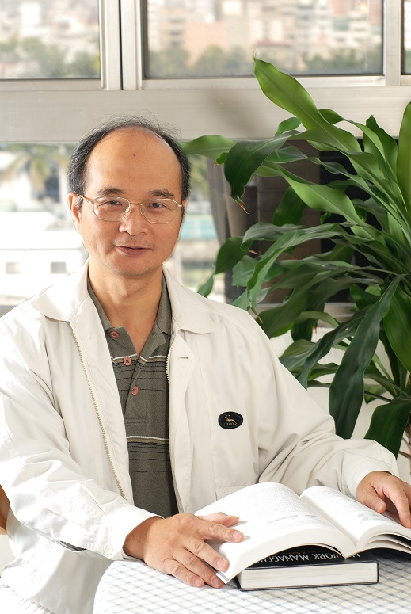

Member
Retired teachers

I-En Liao
Professor
| Education | PhD in Computer Science, Ohio State University |
| Experience | Associate Professor, Department of Applied Mathematics, National Chung Hsing University |
| Areas of Expertise | XML Databases, Data Mining, Wireless Network, Cloud Computing and Big Data Analytics |
| Phone | (04)2284-0497 ext 705 |
| Webpage | http://dmlab.cs.nchu.edu.tw/ |
| ieliao@nchu.edu.tw |

Woei Lin
Professor
| Education | 1985 Ph.D. in Computer Science, University of Texas at Austin |
| Experience | Associate Professor, Department of Electrical Engineering, University of Hawaii, USA, Assistant Professor, Department of Electrical Engineering, Penn State University, USA |
| Areas of Expertise | Wireless Networks, Network Switching and Routing, System Performance Evaluation, Parallel/Distributed Systems |
| Phone | (04)2284-0497 ext 907 |
| Webpage | None |
| wlin@nchu.edu.tw |

Shang-Juh Kao
Professor
| Education | PhD in Computer Science, Ohio State University |
| Experience | Associate Professor, Department of Applied Mathematics, National Chung Hsing University, Convenor of the Network Management Team (NM) for the Draft OSI Protocol Standard of the Republic of China, Member of the Network Management Team (NM) for the Draft OSI Protocol Standard of the Republic of China, Research Assistant, Department of Computer Science, The Ohio State University, Teaching Assistant, Department of Mathematics, Ohio State University, Teaching Assistant, Department of Applied Mathematics, National Chengchi University |
| Areas of Expertise | Computer Networks, Systems and Network Management, XML Data Processing, Cloud Computing |
| Phone | (04)2284-0497 ext 708 |
| Webpage | http://snmlab.cs.nchu.edu.tw/professor.asp |
| sjkao@cs.nchu.edu.tw |